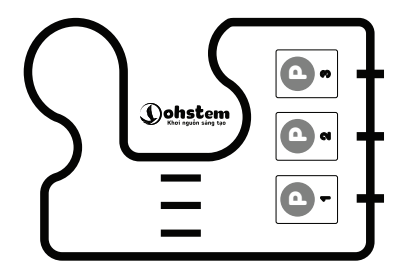

10. Bài 6: Thử thách nâng cao
Mục tiêu:
Biết cách kết hợp các loại cảm biến để có thể lập trình cho robot hoạt động thông minh hơn và giải quyết được các bài toán phức tạp.
1. Bản đồ sử dụng
Bạn sẽ sử dụng bản đồ đi kèm với xBot trong bài học này.
{kind=link}
Bạn cũng có thể sử dụng băng keo đen và giấy trắng để tự làm bản đồ theo ý mình.
2. Bài toán dò đường kết hợp với né vật cản
Bạn hãy đặt 1 vật cản ở vị trí bất kỳ trên vạch đen và nhiệm vụ của robot là vừa di chuyển theo vạch, vừa né vật cản.
{kind=link}
Để giải quyết bài toán này thì chúng ta cần chia làm nhiều bài toán con và sử dụng khái niệm Hàm đã học để xử lý từng bài toán con.
Trước tiên là bài toán né vật cản. Nếu đang di chuyển mà gặp vật cản, robot cần phải:
Dừng lại và phát ra âm thanh cảnh báo
Đi vòng qua một bên
Quay về lại vạch đen ban đầu
Dừng lại và phát ra âm thanh cảnh báo
Chúng ta cần tạo một hàm riêng cho nhiệm vụ là dừng lại và phát âm thanh cảnh báo.
{kind=link}
Đi vòng qua vật cản
Để đi vòng qua vật cản thì cần rẽ phải, đi thẳng, rẽ trái, đi thẳng cho đến khi gặp vạch đen thì rẽ phải.
{kind=link}
Chú ý: Bạn cần phải tinh chỉnh thời gian cho phù hợp với tình trạng của robot và kích thước của vật cản.
Đi theo vạch đen
Hàm để robot đi theo vạch đen sẽ giống ở phần 6-5.
{kind=link}
Đưa các hàm vào chương trình
Sau khi ghép lại thì chương trình cuối cùng sẽ như sau:
{kind=link}
3. Bài toán tìm và đẩy ngã chai nước
Đây là một bài thi đấu khá phổ biến trong các cuộc thi robot. Các robot sẽ hoạt động bên trong vòng tròn giới hạn bởi vạch đen và có đặt một vài đồ vật dạng hình trụ hoặc những chai nước.
{kind=link}
Nhiệm vụ của xBot là tìm và đẩy ngã chai nước mà không ra ngoài vùng bao quanh bởi vạch đen.
Ở bài toán này, chúng ta sẽ xử lý từng bài toán nhỏ của chương trình để giải quyết vấn đề:
Dừng trước vạch đen, sau đó lùi lại và rẽ hướng khác
Phát hiện chai nước và đẩy ngã
Dừng trước vạch đen
Để tránh đi ra khỏi vòng tròn, robot cần phát hiện ra vạch đen sau đó dừng lại.
{kind=link}
Lùi lại và rẽ hướng khác
Thay vì dừng hẳn, chúng ta để robot lùi lại và rẽ sang phải.
{kind=link}
Sơ đồ hoạt động như sau:
{kind=link}
Tìm chai nước và đẩy ngã
Chúng ta sẽ cho robot liên tục xoay sang phải cho đến khi cảm biến khoảng cách phát hiện chai nước (khoảng cách < 30cm). Sau đó, robot tiến tới và đẩy ngã chai nước.
{kind=link}
Sơ đồ hoạt động như sau:
{kind=link}
Lưu ý: Tùy vào độ rộng của bản đồ, bạn cần chỉnh khoảng cách để xBot có thể phát hiện chai nước sao cho phù hợp (Cảm biến đo được khoảng cách tối đa là 2 mét)
Báo hiệu
Để sinh động hơn, hãy thử cho robot vừa xoay vừa phát ra âm thanh. Khi đó ta cần dùng khối lệnh sau:
{kind=link}
Khối lệnh này có ý nghĩa là liên tục phát ra âm thanh trong lúc chưa phát hiện được cột nào (khoảng cách > 30cm). Khi đó robot vẫn đang xoay liên tục do khối lệnh trước đó.
{kind=link}
Sơ đồ hoạt động như sau: